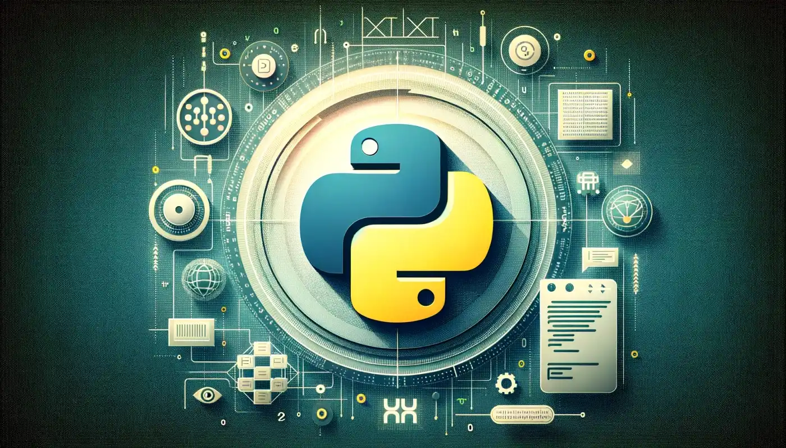

Lập trình Back-end, học lập trình BackEnd hiện đang là xu hướng khi mọi thứ đều được đẩy lên Website trên Internet. Hệ thống lưu trữ đám mây, trò chơi online, nghe nhạc trực tuyến, v.v. Tất cả những điều này đòi hỏi ngày càng nhiều lập trình viên Backend, chuyên gia về “phần bên trong” của trang web và máy chủ. Vì thế, trong bài viết này, chúng mình sẽ giúp bạn giải đáp câu hỏi Học lập trình BackEnd là gì, ra làm gì, lương có không? Bắt đầu ngay nhé!
✨ 1.Lập trình BackEnd là gì?
✍ Website là một ứng dụng máy khách – máy chủ trong đó máy khách (Front End) chạy trong trình duyệt web và phần Backend chạy trên máy chủ web.
Frontend là giao diện ứng dụng web được hiển thị trong trình duyệt và cho phép người dùng tương tác với ứng dụng web.
Học lập trình web backend liên quan đến việc tạo ra “bộ não” của ứng dụng, đảm nhiệm tất cả các chức năng của ứng dụng web. Chức năng này phụ thuộc vào logic và dữ liệu cần thiết mà website phải cung cấp. Khi máy khách cần truy cập dữ liệu, nó sẽ gửi yêu cầu đến máy chủ. Máy chủ sẽ tiếp nhận, xử lý yêu cầu và gửi phản hồi lại cho khách.
📋 Nhiệm vụ của lập trình viên Backend bao gồm:

⭕ Trong phần này, chúng ta sẽ nói về ngôn ngữ lập trình nào được sử dụng để học lập trình Back End. Danh sách này bao gồm Java, PHP, Python, Ruby và một số khác.
✨ 1. Java

👉 Java là một ngôn ngữ học lập trình Backend được phát triển bởi Sun Microsystems. Hiện thuộc sở hữu của Oracle. Android dựa trên Java. Ngôn ngữ này xuất hiện vào năm 1995 và hiện đang ngày càng phát triển. Trong một số trường hợp, ngôn ngữ này kém hơn C/C++ về thời gian thực thi. Ngôn ngữ được sử dụng cho cả ứng dụng web và máy tính để bàn/di động.
📋 Ứng dụng của Java
✨ 2. PHP

👉 PHP là một ngôn ngữ học lập trình Backend cổ điển khác. Nó cũng được tạo ra vào năm 1995. Không giống như Java, PHP chỉ được sử dụng cho các ứng dụng web và là một trong những ngôn ngữ lập trình phổ biến nhất (mặc dù nó được coi là hơi lỗi thời kể từ năm 2022). Facebook, Wikipedia, Yahoo!, Baidu và nhiều trang khác đều sử dụng PHP. Nó cũng được xây dựng trên Framework phổ biến nhất WordPress.
📋 Đặc điểm của PHP
1.Dễ học và sử dụng:
2.Chạy trên nhiều nền tảng:
3.Mã nguồn mở:
4.Tích hợp cơ sở dữ liệu dễ dàng:
5.Hiệu suất cao:
6.Hỗ trợ nhiều framework mạnh mẽ:
7.Khả năng mở rộng và linh hoạt:
✨ 3. Python
👉 Python là một trong những ngôn ngữ phù hợp cho cả web và ứng dụng. Ngôn ngữ này thay thế hoàn toàn những ngôn ngữ cũ hơn bởi tính đa nền tảng và hiệu suất chương trình tốt. Tất nhiên, vẫn còn xa thì Python mới vượt qua được PHP.
📋 Đặc điểm chính của Python
1.Dễ học và sử dụng:
2.Mã nguồn mở:
3.Đa nền tảng
4.Hỗ trợ phong cách lập trình linh hoạt:
5.Thư viện phong phú:
6.Tương tác tốt với các ngôn ngữ khác:
7.Chạy tương tác
✨ 4. Ruby
👉 Ruby là một ngôn ngữ lập trình hướng đối tượng, được phát triển bởi Yukihiro "Matz" Matsumoto tại Nhật Bản vào năm 1995. Ruby nổi bật với thiết kế tập trung vào việc làm cho lập trình trở nên thú vị và hiệu quả, với cú pháp dễ đọc, tự nhiên và linh hoạt. Ruby cũng nổi tiếng nhờ framework Ruby on Rails, một công cụ mạnh mẽ để phát triển web.
📋 Đặc điểm nổi bật của Ruby
1.Hướng đối tượng hoàn toàn (Pure Object-Oriented):
2.Cú pháp đơn giản và dễ đọc:
3.Linh hoạt và mạnh mẽ:
4.Thư viện phong phú:
5.Framework phát triển web mạnh mẽ:
✨ 5. perl
👉 Perl (Practical Extraction and Report Language)
Perl là một ngôn ngữ lập trình cấp cao, đa năng, được phát triển bởi Larry Wall vào năm 1987. Ban đầu, Perl được thiết kế để xử lý văn bản và báo cáo, nhưng nó đã phát triển thành một công cụ mạnh mẽ cho nhiều loại ứng dụng, từ quản lý hệ thống, phát triển web, đến xử lý dữ liệu.
👉 Perl đã là quá khứ, nhưng vẫn còn nhiều người sử dụng nó. Đây là một ngôn ngữ phía máy chủ với cú pháp khá khó hiểu.Bạn cũng có thể chọn ngôn ngữ học lập trình Backend từ các hệ thống quản lý cơ sở dữ liệu khác nhau.
👉 MySQL được sử dụng phổ biến nhất, nhưng cũng có PostgreSQL, SQLite, MongoDB và các tùy chọn khác trên thị trường. Tất nhiên, mỗi ngôn ngữ và mỗi hệ thống cơ sở dữ liệu hoạt động hơi khác một chút.
📋Đặc điểm nổi bật của Perl
1.Linh hoạt và mạnh mẽ
2.Hệ thống module phong phú:
3.Quản lý file và xử lý văn bản:
4.Tự động hóa hệ thống:
5.Sinh học tin học (Bioinformatics):
1.Công nghệ được sử dụng để phát triển BackEnd
📂 Khi xây dựng BackEnd, các nhà phát triển cũng sử dụng ngôn ngữ lập trình để thiết kế cấu trúc website giống với FrontEnd như là HTML, JavaScript, CSS,… Bên cạnh đó, các ngăn xếp phần mềm phát triển BackEnd được sử dụng và làm việc thường xuyên là hệ điều hành, máy chủ web, ngôn ngữ, APA lập trình, khuôn khổ.
📂 Ngăn xếp phần mềm có nghĩa là các công nghệ được xếp chồng lên nhau để tạo nên môi trường máy chủ. Một số ngăn xếp web nổi tiếng và được dùng phổ biến hiện nay là MEAN, LAMP, .NET. Các ngôn ngữ, APA lập trình, khuôn khổ thì có nhiệm vụ hiển thị web cho máy chủ để vận hành các chương trình ứng dụng phục vụ cho người dùng.
2.Những gì cần học để trở thành backend developer
Ở trên, chúng ta đã nói về ngôn ngữ học lập trình Backend và các hệ thống quản lý cơ sở dữ liệu. Chúng mình sẽ tổng hợp lại một số kiến thức cần thiết khác:
-Back-end là phần của hệ thống phần mềm hoạt động phía sau (server-side) và chịu trách nhiệm xử lý dữ liệu, logic nghiệp vụ, và tương tác với cơ sở dữ liệu. Đối với các ứng dụng web, back-end là phần "thấy" của ứng dụng khi người dùng yêu cầu dữ liệu hoặc thực hiện các thao tác mà không trực tiếp tương tác với giao diện người dùng (front-end).
-Back-end đóng vai trò quan trọng trong việc tạo ra các ứng dụng web, quản lý dữ liệu và đảm bảo hiệu suất, bảo mật của hệ thống. Các kỹ năng trong back-end bao gồm lập trình, cơ sở dữ liệu, bảo mật, và triển khai ứng dụng. Các công cụ và framework hiện đại giúp tối ưu hóa công việc của lập trình viên back-end, giúp họ phát triển các hệ thống web mạnh mẽ và hiệu quả.
Bạn thấy bài viết hay và hữu ích? Đừng ngại Share với bạn bè và đồng nghiệp nhé!